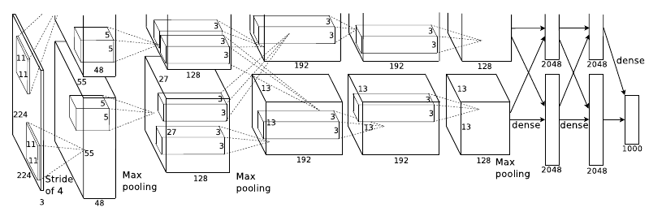
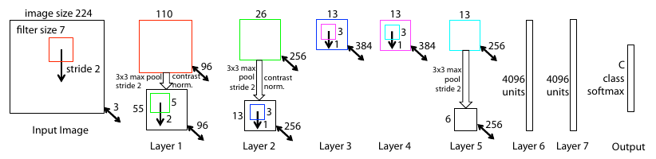
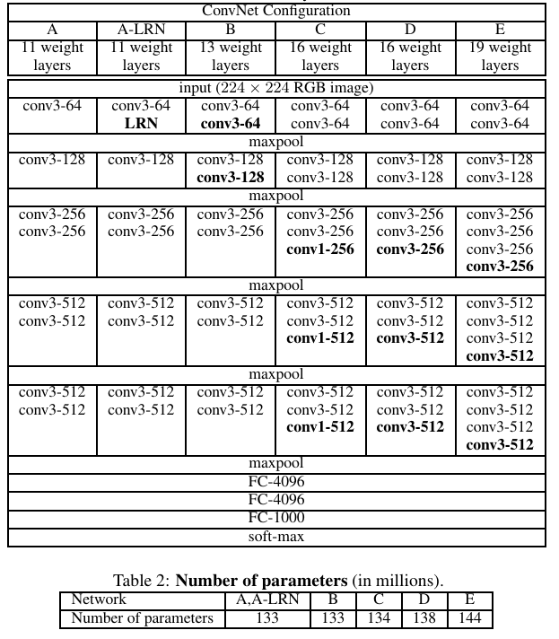
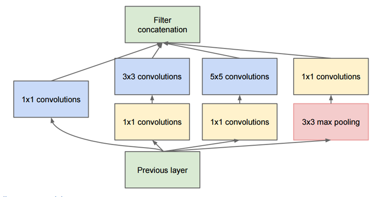
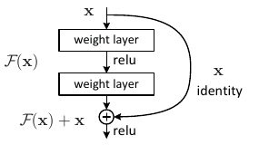
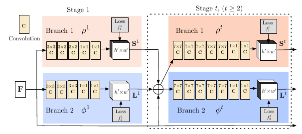

Table of Contents
- 1. CNN
- 1.1. DONE 1998 - Gradient-Based Learning Applied to Document Recognition
- 1.2. DONE 2012 - ImageNet Classification with Deep Convolutional Neural Networks
- 1.3. TODO 2013 - Network in Network
- 1.4. DONE 2013 - Visualizing and Understanding Convolutional Networks
- 1.5. TODO 2013 - Overfeat: Integrated Recognition, Localization and Detection Using Convolutional Networks
- 1.6. DONE 2014 - Very Deep Convolutional Networks for Large-Scale Image Recognition
- 1.7. DONE 2014 - Going Deeper With Convolutions
- 1.8. DONE 2015 - Deep Residual Learning for Image Recognition
- 1.9. TODO 2016 - Xception: Deep Learning With Depthwise Separable Convolutions
- 2. Human Pose Estimation
- 3. Object Detection
- 3.1. DONE 2013 - Rich Feature Hierarchies for Accurate Object Detection and Semantic Segmentation
- 3.2. DONE 2015 - Fast R-Cnn
- 3.3. DONE 2015 - Faster R-Cnn: Towards Real-Time Object Detection With Region Proposal Networks
- 3.4. TODO 2016 - Feature Pyramid Networks for Object Detection
- 3.5. TODO 2017 - Mask R-Cnn
- 3.6. TODO 2018 - Object Detection With Deep Learning: a Review
- 4. Natural Language Processing
1 CNN
1.2 DONE 2012 - ImageNet Classification with Deep Convolutional Neural Networks
NIPS2012_4824 AlexNet
- Summary: In the paper, the group discussed the architecture of the network(which was called AlexNet). They used relatively simple layout, compared to modern architectures. The network was made up of 5 conv layers, max-pooling layers, dropout layers, and 3 fully connected layers. The network they designed was used for classification with 1000 possible categories.
- Problem: For classification with 1000 possible categories.
- Experiment
- Date: Trained the network on ImageNet data, which contained over 15 million annotated images from a total of over 22000 categories.
- Model: 
Results:
Model Top-1 Top-5 Spares coding 47.1% 28.2% SIFT+FVs 45.7% 25.7% AlexNet 37.5% 17.0%
1.2.1 Method:
- Used ReLU for the nonlinearity functions(found to decrease training time as ReLUs are several times faster than the conventional tanh function).
- Used data augmentation techniques that consisted of image translations, horizontal reflections, and patch extractions.
- Implemented dropout layers in order to combat the problem of over fitting to the training data.
- Trained the model using batch stochastic gradient descent, with specific values for momentum are weight decay.
- Trained on two GTX 580 GPus for five to six days.
1.4 DONE 2013 - Visualizing and Understanding Convolutional Networks
zeiler13_visual_under_convol_networ
- Summary: The paper are details of a slightly modified AlexNet model and a very interesting way of visualizing feature maps.
- Problem: ILSVRC 2013
- Experiment
- Date: ImageNet
- Model: 
1.4.1 Method:
- Very similar architecture to AlexNet, except for a few minor modifications.
- AlexNet trained on 15 million images, while ZF Net trained on only 1.3 million images.
- Instead of using 11x11 sized filters in the first layer(which is what AlexNet implemented), ZF Net used filters of size 7x7 and a decreased stride value. The reasoning behind this modification is that a smaller filter size in the first conv layer helps retain a lot of original pixel information in the input volume. A filtering of size 11x11 proved to be skipping a lot of relevant information, especially as this is the first conv layer.
- As the network grows, we also see a rise in the number of filters used.
- Trained on a GTX 580 GPU for twelve days.
- Developed a visualization technique named Deconvolutional Network, which helps to examine different feature activations and their relation to the input space. Called "deconvnet" because it maps features to pixels(the opposite of what a Convolutional layer does).
1.5 TODO 2013 - Overfeat: Integrated Recognition, Localization and Detection Using Convolutional Networks
1.6 DONE 2014 - Very Deep Convolutional Networks for Large-Scale Image Recognition
simonyan14_very_deep_convol_networ_large
- Summary: Simplicity and depth. The paper reinforced the notion that convolution neural networks have to have a deep network of layers in order for this hierarchical representation of visual data to work.
- Problem: ILSVRC 2014
- Experiment
- Date: ImageNet
- Model: very_deep 
1.6.1 Method:
- The use of only 3x3 sized filters is quite different from AlexNet's 11x11 filters in the first layer and ZF Net's 7x7 filters. The author's reasoning is that the combination of two 3x3 conv layers has an effective receptive field of 5x5. This in turn simulates a larger filter while keeping the benefits of smaller filters sizes. One of the benefits is a decrease in the number of parameters. Also, with two conv layers, we're able to use two ReLU layers instead of one.
- 3 conv layers back to back have an effective receptive field of 7x7.
- As the spatial size of the input volumes at each layer decrease(result of the conv and pool layers), the depth of the volumes increases due of the increased number of filters as you go down the network.
- Interesting to notice that the number of filters doubles after each maxpool layer. This reinforces the idea of shrinking spatial dimensions, but growing depth.
- Worked well on both image classification and localization tasks. The authors used a form of localization as regression (sermanet13_overf)
- Built model with the Caffe toolbox.
- Used scale jittering as one data augmentation technique during training.
- Used ReLU layers after each conv layer and trained with batch gradient descent.
- Trained on 4 Nvidia Titan Black GPUs for two to three weeks.
1.7 DONE 2014 - Going Deeper With Convolutions
szegedy14_going_deeper_with_convol
- Summary: The paper present the architecture of CNN(1.7.1.1). GoogLeNet was one of the first models that introduced the idea that CNN layers didn't always have to be stacked up sequentially. Coming up with the Inception module, the authors showed that a creative structuring of layers can lead to improved performance and computationally efficiency.
- Problem: ILSVRC 2014
- Experiment
- Date: ImageNet
- Model:

1.7.1 Method:
- Used 9 Inception modules in the whole architecture, with over 100 layers in total! Now that is deep…
- No use of fully connected layers! They use an average pool instead, to go from a 7x7x1024 volume to a 1x1x1024 volume. This saves a huge number of parameters.
- Uses 12x fewer parameters than AlexNet.
- During testing, multiple crops of the same image were created, fed into the network, and the softmax probabilities were averaged to give us the final solution.
- Utilized concepts from R-CNN for their detection model.
- There are updated versions to the Inception module.
- Trained on "a few high-end GPUs within a week".
- Inception module

Figure 1: Inception module
Basically, at each layer of a traditional ConvNet, you have to make choice of whether to have a pooling operation or a conv operation(there is also the choice of filter size). What an Inception module allows you to do is perform all of these operations in parallel. But It would lead to way too many outputs. We would end up with extremely large depth channel for the output volume. The way that the authors address this is by adding 1x1 conv operations before the 3x3 and 5x5 layers. The 1x1 convolutions(or network in network layer)provide a method of dimensionality reduction.
1.8 DONE 2015 - Deep Residual Learning for Image Recognition
he15_deep_resid_learn_image_recog
- Summary: The paper present a residual learning framework to solve degradation problem
- Problem: degradation problem With the network depth increasing, accuracy gets saturated and then degrades rapidly
- Experiment
- Data: ImageNet
- Model: deep-residual-networks
1.8.1 Method: residual learning framework
- TODO Residual learning
read paper balduzzi17_shatt_gradien_probl
- Identity Mapping by Shortcuts
The paper adopt residual learning to every few stacked layers. A building block is defined as: Here \(x\) and \(y\) are the input and output vectors of the layers considered. The function \(F(x,\{W_{i}\})\) represents the residual mapping to be learned.
\begin{equation} \label{eq:1} y = F(x,\{W_{i}\}+x). \end{equation}The dimensions of \(x\) and \(F\) must be equal, If this is not the case(e.g., when changing the input/output channels), we can perform a linear projection \(W_{s}\) by the shortcut connections to match the dimensions:
\begin{equation} \label{eq:2} y=F(x,\{W_{i}\})+W_{s}x \end{equation} - Residual Network

Figure 2: Residual network
the input and output of the dimensions
- same: use identity shortcuts (Eqn.(1))
- increase: consider two options
- Identity: The shortcut still performs identity mapping, with extra zero entries padded for increasing dimensions, This option introduces no extra parameter.
- projection: The projection shortcut in Eqn.(2) is used to match dimensions(done by 1x1 convolutions).
2 Human Pose Estimation
2.1 DONE 2016 - Realtime Multi-Person 2d Pose Estimation Using Part Affinity Fields
cao16_realt_multi_person_pose_estim
- Summary: The paper presents an approach to efficiently detect the 2D pose of multiple people in an image. The approach uses a non-parametric representation, which we refer to as Part Affinity Fields(PAFs), to learn to associate body parts with individuals in the image.
- Problem: Realtime Multi-Person 2d Pose Estimation
- Experiment
- Date: COCO & MPI
- Model: Realtime_Multi-Persion_Pose_Estimation
2.1.1 Method:
Confidence Maps for Part Detection
The paper generate the groundtruth confidence maps from the annotated 2D keypoints. In fact, Using Gaussian filtering for the annotated 2D keypoints.
In this paper, the key points are obtained by shifting the confidence map by one pixel from four directions and taking the maximum values of the original map and the offset map.
Part Affinity Fields for Part Associate
A 2D vector encodes the direction that points from one part of the limb to the other.
Multi-Person Parsing using PAFs
The paper measures the alignment of the predicted PAFs with the candidate limb that would be formed by connecting the detected body parts and take the maximum values of the alignment.
Network arch

Figure 3: Architecture of the two-branch multi-stage CNN
- F, that is a set of feature maps, is generated by a convolution network(initialized by the first 10 layers of VGG-19 and fine-tuned)
- Each stage in the first branch predicts confidence maps \(S^{t}\).
- Each stage in the second branch predicts PAFs \(L^{t}\).
- The predictions from the two branches, along with the image features, are concatenated for next stage.
2.2 TODO 2017 - Cascaded Pyramid Network for Multi-Person Pose Estimation
chen17_cascad_pyram_networ_multi_person_pose_estim
- Summary:
- Problem:
- Experiment
- Date:
- Model:
2.2.1 Method:
3 Object Detection
3.1 DONE 2013 - Rich Feature Hierarchies for Accurate Object Detection and Semantic Segmentation
girshick13_rich_featur_hierar_accur_objec
- Summary The paper represent the method what is called R-CNN for object detection. The method first propose regions, then extract features, and then classify those regions based on their features. In essence, we have turned object detection into an image classification problem. R-CNN was very intuitive, but very slow.
- Problem: object detection
- Experiment
- Date: ILSVRC2013, PASCAL VOC 2010-12
- Model: https://github.com/rbgirshick/rcnn
3.1.1 Method:
The paper object detection system consists of three steps:
- Scan the input image for possible objects using an algorithm called Selective Search, generating(about 2000 region proposals)
Feature extraction:
extract a 4096-dimensional feature vector form each region proposal using the Caffe implementation of the CNN.(require Object proposal transformations)
- Take the output of each CNN and feed it into a) an SVM to classify the region and b) a linear regressor to tighten the bounding box of the object, if such an object exists

3.2 DONE 2015 - Fast R-Cnn
- Summary:
Fast R-CNN resembled the original in many ways, but improved on its detection speed through two main augmentations:
- Performing feature extraction over the image before proposing regions, thus only running one CNN over the entire image instead of 2000 CNN's over 2000 overlapping regions
- Replacing the SVM with s softmax layer, thus extending the neural network for predictions instead of creating a new model
- Problem: object detection
- Experiment
3.2.1 Method:

3.3 DONE 2015 - Faster R-Cnn: Towards Real-Time Object Detection With Region Proposal Networks
- Summary: Faster R-CNN = 3.3.1.1 + Fast R-CNN
- Problem: Object Detection
- Model: https://github.com/rbgirshick/py-faster-rcnn
3.3.1 Method:
- RPN(region proposal network)
- At the last layer of an initial CNN, a 3x4 sliding window moves across the feature map and maps it to a *lower dimension*(e.g. 256-d for ZF and 512-d for VGG)
- For each sliding-window location, it generates multiple possible regions based on \(k\) fixed-ratio anchor boxes(default bounding boxes, class number)
- Each region proposal consists of:
clslayer: an "objectness" score for that regionreglayer: 4 coordinates representing the bounding box of the region

Once we have our region proposals, we feed them straight into what is essentially a Fast R-CNN. We add a pooling layer, some fully-connected layers, and finally a softmax classification layer and bounding box regressor. In a sense, Faster R-CNN = RPN + Fast R-CNN.
3.4 TODO 2016 - Feature Pyramid Networks for Object Detection
lin16_featur_pyram_networ_objec_detec
- Summary: The approach is to reuse the pyramidal feature hierarchy computed by a ConvNet as if it were a featured image pyramid.
- Problem: Deep learning object detectors have avoided pyramid representations, in part because they are compute and memory intensive.
3.4.1 Method:
4 Natural Language Processing
Speech and Language Processing
(venv-workon "python3") (setq-local my/org-babel-src-list '()) (dolist (list my/org-babel-src-list) (org-babel-goto-named-src-block list) (org-babel-execute-src-block)) (outline-hide-sublevels 1)
Bibliography
- [lecun-98] "LeCun, Bottou, Bengio, Haffner & ", Gradient-Based Learning Applied to Document Recognition, "Proceedings of the IEEE", 86(11), 2278-2324 (1998).
- [NIPS2012_4824] @InCollectionNIPS2012_4824, title = ImageNet Classification with Deep Convolutional Neural Networks, author = Alex Krizhevsky and Sutskever, Ilya and Hinton, Geoffrey E, booktitle = Advances in Neural Information Processing Systems 25, editor = F. Pereira and C. J. C. Burges and L. Bottou and K. Q. Weinberger, pages = 1097-1105, year = 2012, publisher = Curran Associates, Inc., url = http://papers.nips.cc/paper/4824-imagenet-classification-with-deep-convolutional-neural-networks.pdf
- [lin13_networ_networ] Lin, Chen & Yan, Network in Network, CoRR, (2013). link.
- [zeiler13_visual_under_convol_networ] Zeiler & Fergus, Visualizing and Understanding Convolutional Networks, CoRR, (2013). link.
- [sermanet13_overf] Sermanet, Eigen, Zhang, , Mathieu, Fergus, LeCun & Yann, Overfeat: Integrated Recognition, Localization and Detection Using Convolutional Networks, CoRR, (2013). link.
- [simonyan14_very_deep_convol_networ_large] Simonyan & Zisserman, Very Deep Convolutional Networks for Large-Scale Image Recognition, CoRR, (2014). link.
- [szegedy14_going_deeper_with_convol] Szegedy, Liu, Jia, , Sermanet, Reed, Anguelov, Dragomir, Erhan, Vanhoucke, & Rabinovich, Going Deeper With Convolutions, CoRR, (2014). link.
- [he15_deep_resid_learn_image_recog] He, Zhang, Ren, & Sun, Deep Residual Learning for Image Recognition, CoRR, (2015). link.
- [balduzzi17_shatt_gradien_probl] Balduzzi, Frean, Leary, , Lewis, Ma, McWilliams & Brian, The Shattered Gradients Problem: If Resnets Are the Answer, Then What Is the Question?, CoRR, (2017). link.
- [chollet16_xcept] Chollet, Xception: Deep Learning With Depthwise Separable Convolutions, CoRR, (2016). link.
- [cao16_realt_multi_person_pose_estim] Cao, Simon, Wei, & Sheikh, Realtime Multi-Person 2d Pose Estimation Using Part Affinity Fields, CoRR, (2016). link.
- [chen17_cascad_pyram_networ_multi_person_pose_estim] Chen, Wang, Peng, , Zhang, Yu & Sun, Cascaded Pyramid Network for Multi-Person Pose Estimation, CoRR, (2017). link.
- [girshick13_rich_featur_hierar_accur_objec] Girshick, Donahue, Darrell, & Malik, Rich Feature Hierarchies for Accurate Object Detection and Semantic Segmentation, CoRR, (2013). link.
- [girshick15_fast_r_cnn] Girshick, Fast R-Cnn, CoRR, (2015). link.
- [ren15_faster_r_cnn] Ren, He, Girshick, & Sun, Faster R-Cnn: Towards Real-Time Object Detection With Region Proposal Networks, CoRR, (2015). link.
- [lin16_featur_pyram_networ_objec_detec] Lin, Doll\'ar, Girshick, Ross, He, Hariharan, & Belongie, Feature Pyramid Networks for Object Detection, CoRR, (2016). link.
- [he17_mask_r_cnn] He, Gkioxari, Doll\'ar, Piotr & Girshick, Mask R-Cnn, CoRR, (2017). link.
- [zhao18_objec_detec_with_deep_learn] Zhao, Zheng, Xu, & Wu, Object Detection With Deep Learning: a Review, CoRR, (2018). link.